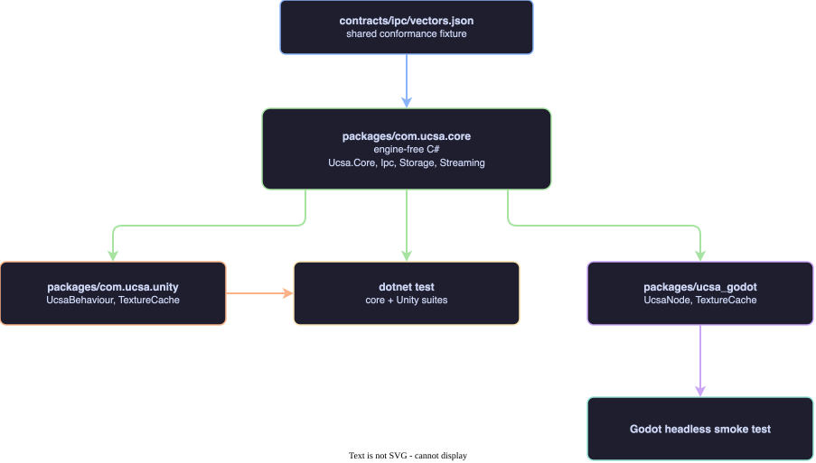
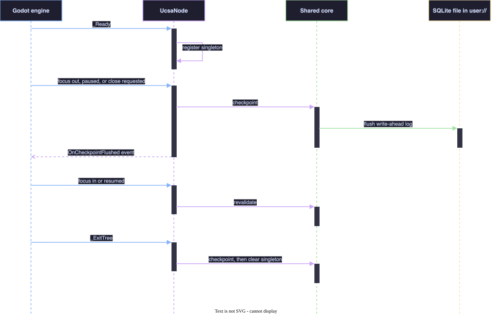

One-paragraph summary. Add a Godot 4 (.NET / C#) package for UCSA, the client-state library in this repo. The engine-free C# that today lives inside the Unity package moves into a shared core package; Unity and Godot each become a thin engine binding on top of it. “Shipped” means in the repo, tested in the pre-ship check and CI, and documented, the same bar as the Dart, Flutter and Unity packages. Nothing is published to a registry and the release workflow is not touched.
release.yml
UCSA has a TypeScript core and hand-written ports for Dart, Flutter and Unity. There is no Godot support: no tracked file mentions Godot. A Godot game cannot use UCSA’s query cache, offline mutation outbox, content-addressable storage, or stream resume.
The Unity package already contains almost everything a Godot C# port
needs, but it is locked inside one Unity assembly: two classes are named
UnitySqliteAdapter and UnityCasStore, every
namespace starts with Ucsa.Unity, and a mock
UnityEngine namespace is compiled into the same source
set.
The owner asked for Godot support delivered end to end. Release 1.13 is open and the backlog is otherwise empty.
release.yml change.dotnet test alone never loads
the engine.ci.yml so the
smoke test runs on every pull request (default, not asked) — otherwise
it would be silently skipped the way Dart and Flutter tests are
today.apps/cli has no
per-platform code.| Approach | Verdict |
|---|---|
| A. Shared core as its own source package, consumed by Unity through an assembly reference and by Godot through a project reference | Chosen. Source-level sharing keeps Unity’s ahead-of-time compilation working and needs no build step. |
| B. Build the core to a DLL and drop it into each engine | Rejected. Adds a binary build and copy step, and committed binaries drift from source. |
| C. Godot compiles the Unity package’s files in place | Rejected by the owner’s choice. Leaves Unity names in the Godot API. |
flowchart TD
V["contracts/ipc/vectors.json<br/>shared conformance fixture"]
C["packages/com.ucsa.core<br/>engine-free C#<br/>Ucsa.Core, Ipc, Storage, Streaming"]
U["packages/com.ucsa.unity<br/>UcsaBehaviour, TextureCache"]
G["packages/ucsa_godot<br/>UcsaNode, TextureCache"]
T["dotnet test<br/>core + Unity suites"]
S["Godot headless smoke test"]
V --> C
C --> U
C --> G
C --> T
U --> T
G --> S
Editable source:
diagrams/godot-package-layout.drawio.
packages/com.ucsa.core (new). Holds the
four engine-free folders moved out of the Unity package:
Runtime/Core, Runtime/Ipc,
Runtime/Storage, Runtime/Streaming (13 files,
verified free of UnityEngine and of the mock).
package.json (name com.ucsa.core, version
0.1.0, no dependencies) and
Runtime/com.ucsa.core.asmdef with
noEngineReferences: true, so Unity refuses to compile it if
an engine type leaks in.Ucsa.Core.csproj at the package root: library,
net8.0, Nullable and
ImplicitUsings enabled, Microsoft.Data.Sqlite
10.0.12, default globbing off and an explicit
Compile Include="Runtime/**/*.cs" so it never picks up
Tests/.Tests/Ucsa.Core.Tests.csproj with the engine-free NUnit
tests moved from the Unity package. The lookup of
contracts/ipc/vectors.json walks up from the binary
directory, so it survives the move.Unity segment:
Ucsa.Unity.Core becomes Ucsa.Core, and
likewise Ucsa.Ipc, Ucsa.Storage,
Ucsa.Streaming.UnitySqliteAdapter becomes SqliteAdapter
and UnityCasStore becomes CasStore; these are
the only two prefixed types. No compatibility aliases: a workspace-wide
search found no consumer outside this repo.packages/com.ucsa.unity (shrinks).
Keeps Runtime/Unity/UcsaBehaviour.cs,
Runtime/Unity/UnityCompatibility.cs (the mock) and
Runtime/Transports/TextureCache.cs, with their namespaces
unchanged.
com.ucsa.core.package.json does not declare a
dependency on the core. Unity’s package manager only resolves
dependencies from a registry, and this repo’s pnpm workspace would try
to fetch that name from npmjs. A Unity project lists both packages in
its own manifest; the README says so.Linker.xml preserves both assemblies.UcsaBehaviourTests, TextureCacheTests,
E2EFullChainTests) and references the core project.packages/ucsa_godot (new). A Godot 4
.NET project that is also the addon, namespace
Ucsa.Godot:
project.godot and UcsaGodot.csproj (Godot
.NET SDK, project reference to Ucsa.Core.csproj). It has no
package.json, so the pnpm workspace ignores it.addons/ucsa/UcsaNode.cs: the Godot counterpart of
UcsaBehaviour.addons/ucsa/TextureCache.cs: the Godot counterpart of
the Unity texture cache, producing ImageTexture.tests/Smoke.tscn and tests/Smoke.cs: the
in-engine smoke test.README.md: install by copying or linking
addons/ucsa plus the core project.No editor plugin, no plugin.cfg, no GDScript
wrapper.
UcsaNode mirrors what UcsaBehaviour
actually does today, and no more: it is a singleton that raises the same
two events (OnApplicationStateChanged,
OnCheckpointFlushed) and runs the same pause and quit
handlers, which checkpoint the write-ahead log and revalidate on resume.
It does not open, migrate or dispose the database. As
in Unity, the game constructs the storage adapter itself, using
ProjectSettings.GlobalizePath("user://") for the
directory.
sequenceDiagram
participant E as Godot engine
participant N as UcsaNode
participant K as Shared core
participant D as SQLite file in user://
E->>N: _Ready
N->>N: register singleton
E->>N: focus out, paused, or close requested
N->>K: checkpoint
K->>D: flush write-ahead log
N-->>E: OnCheckpointFlushed event
E->>N: focus in or resumed
N->>K: revalidate
E->>N: _ExitTree
N->>K: checkpoint, then clear singleton
Editable source:
diagrams/godot-lifecycle-flow.drawio.
Unity (UcsaBehaviour) |
Godot (UcsaNode) |
Fires on |
|---|---|---|
Awake |
_Ready |
all |
OnApplicationPause(true) |
NotificationApplicationPaused |
mobile |
| (none) | NotificationApplicationFocusOut |
desktop |
OnApplicationPause(false) |
NotificationApplicationResumed,
NotificationApplicationFocusIn |
mobile, desktop |
OnApplicationQuit |
NotificationWMCloseRequest, _ExitTree |
desktop, all |
OnDestroy |
_ExitTree |
all |
Debug.Log* |
GD.Print, GD.PushWarning,
GD.PushError |
all |
Two behaviours are new, not ported. Godot’s paused
and resumed notifications fire only on mobile, and a programmatic quit
sends no close request. So on desktop, the only target verified here,
UcsaNode also checkpoints on focus-out and in
_ExitTree. Both get their own smoke assertions.
Revalidating on focus-in means an alt-tab can trigger refetches; this
matches the TypeScript core’s focus manager and is accepted.
GD.PushError, never thrown into the engine’s
notification dispatch.UcsaNode entering the tree logs a warning and
does not replace the singleton, as in Unity.| Layer | How | Where it runs |
|---|---|---|
| Shared core | Existing NUnit tests, moved, via dotnet test |
Local, pre-ship check, CI |
| Unity binding | Existing three test files against the mock
UnityEngine |
Local, pre-ship check, CI |
| Godot binding | Headless smoke scene in a real Godot .NET build | Local, pre-ship check when a Godot .NET build is present, CI always |
The smoke scene asserts:
SqliteAdapter opened under user://,
a focus-out notification sent to UcsaNode raises
OnCheckpointFlushed, and a value written before it is
readable from a freshly opened adapter.UcsaNode (the _ExitTree path)
checkpoints and clears the singleton.contracts/ipc/vectors.json inside the engine.TextureCache decodes a PNG, returns a non-null texture,
and serves the second request from cache.So that it cannot pass falsely or hang: the scene wraps all
assertions in a try/catch and always calls
GetTree().Quit(code) with 0 only when every assertion
passed (an unhandled C# exception does not set Godot’s exit code); the
runner script builds the project first, runs it under a timeout, and
requires a literal SMOKE PASS 4/4 line in the output as
well as exit code 0.
scripts/precheck.sh: run both .NET test projects; add a
Godot phase that runs when a Godot .NET binary is found
(GODOT_MONO_BIN, else a godot whose version
string contains mono) and prints a visible skip line
otherwise.scripts/integration.sh: repoint its core-only test
filter at the core test project.scripts/e2e-full-chain.sh: its filter spans both future
projects, so it becomes two invocations, each failing if it matched zero
tests (a filter that matches nothing exits 0 today).pnpm-lock.yaml: the new
packages/com.ucsa.core/package.json falls inside the
packages/* workspace glob, so the lockfile gains one empty
importer entry. It is regenerated in phase 1 and
pnpm install --frozen-lockfile is verified, because both
ci.yml and release.yml install that way..gitignore: add .godot/ and the Godot
project’s bin/ and obj/..github/workflows/ci.yml: add one step that downloads a
pinned Godot .NET Linux build and exports GODOT_MONO_BIN,
plus a .NET SDK setup step only if that Godot version needs a newer SDK
than the runner has..github/workflows/release.yml: untouched.apps/docs/src/content/guides/types.ts (the
CS source-root constant), parity.ts and the
guide files that cite renamed C# files: updated in phase
1, because the docs tests assert that every cited path exists
and the pre-ship check runs them.README.md: the roughly 20 existing references to the
renamed classes and paths are updated in phase 1; the new Godot section,
the two-package Unity install note and corrected test commands land in
phase 4.apps/docs: add platform godot to
types.ts and guides/index.ts, Godot snippets
to the six guide files, a Godot column to parity.ts, and
update the docs tests that assert platform lists.Each phase ends with verify, independent review, refactor, re-verify, and leaves the pre-ship check green.
SMOKE PASS 4/4 and exits 0 locally.UcsaNode own the database lifecycle (open,
migrate, dispose). Unity does not do this either.apps/cli, packages/core, the
Dart or Flutter packages, pnpm-workspace.yaml, or
release.yml.The Unity package is restructured without a real Unity editor
to check it. Today the Unity package is only ever compiled by
dotnet against mock engine types, and that stays true.
After this change a Unity project must list two packages
(com.ucsa.core and com.ucsa.unity) in its
manifest and the class names change. The mock-based tests will pass or
fail honestly, but nothing here proves the two-package layout resolves
inside the Unity editor.
net8.0; its SDK accepts a project reference outside the
Godot folder; the notification constant names in the table; the .NET
build’s version string contains mono. If it needs a newer
.NET, the core project multi-targets and ci.yml gains an
SDK setup step; the design does not change.Microsoft.Data.Sqlite’s bundled native library loads inside
Godot on macOS and Linux, and ImageTexture can be created
under the headless renderer. If texture creation is unavailable
headless, assertion 4 checks the decoded Image and the
cache hit instead.UcsaBehaviourTests)
stays in the Unity test project; the draft named two.UcsaNode no longer claims to port database open,
migration and dispose: UcsaBehaviour only registers a
singleton and handles pause and quit. Focus-out and
_ExitTree checkpoints are labelled new, with smoke
assertions.package.json lands in the pnpm workspace:
lockfile regeneration and a frozen-install check added; the Unity
package.json dependency declaration removed..godot/ ignore; namespaces
spelled out; reused-line metric corrected from about 6,450 to about
5,900.